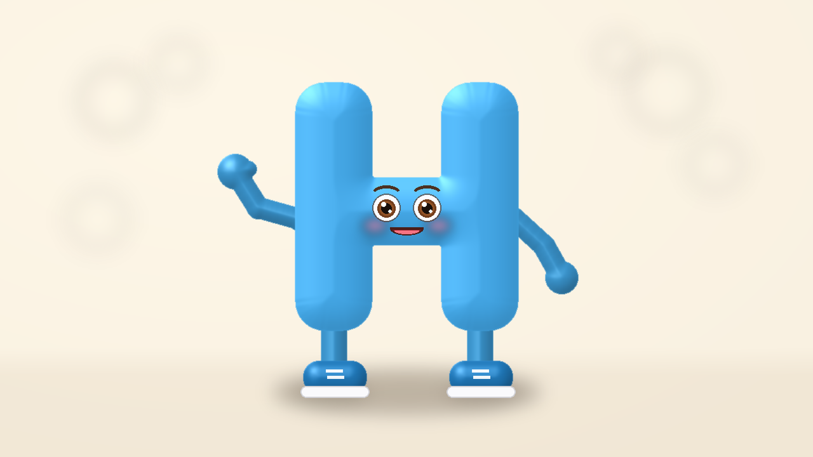

6 chữ · 6 ảnh riêng · 6 phân cảnh riêng. Hoạt hình 3D Pixar cho trẻ 3–5 tuổi.
Chọn ảnh của từng chữ làm ảnh đầu vào cho công cụ tạo video. Sao chép toàn bộ câu lệnh tương ứng bên dưới. Mỗi cảnh dự kiến 9 giây, lời thoại tiếng Việt, chỉ dẫn tiếng Anh. Ảnh là bản 4K nâng độ phân giải; video do bạn tự tạo.
📥 Tải Video Tổng Hợp 6 Chữ Cái (Video_6_Chu_Cai_C_D_E_G_H_K.mp4)
Lời thoại: Xin chào các bạn! Mình là chữ cờ.
🎬 Video phân cảnh S001 (Chữ C - 9 giây, đã tạo hoàn chỉnh):
📥 Tải ảnh 4K chữ C · 📥 Tải video 9s chữ C (.mp4) · 📥 Tải câu lệnh (.txt)
Lời thoại: Xin chào các bạn! Mình là chữ đê.
🎬 Video phân cảnh S002 (Chữ Đ - 9 giây, đã tạo hoàn chỉnh):
📥 Tải ảnh 4K chữ Đ · 📥 Tải video 9s chữ Đ (.mp4) · 📥 Tải câu lệnh (.txt)
Lời thoại: Xin chào các bạn! Mình là chữ e.
🎬 Video phân cảnh S003 (Chữ E - 9 giây, đã tạo hoàn chỉnh):
📥 Tải ảnh 4K chữ E · 📥 Tải video 9s chữ E (.mp4) · 📥 Tải câu lệnh (.txt)
Lời thoại: Xin chào các bạn! Mình là chữ gờ.
🎬 Video phân cảnh S004 (Chữ G - 9 giây, đã tạo hoàn chỉnh):
📥 Tải ảnh 4K chữ G · 📥 Tải video 9s chữ G (.mp4) · 📥 Tải câu lệnh (.txt)

Lời thoại: Xin chào các bạn! Mình là chữ hát.
🎬 Video phân cảnh S005 (Chữ H - 9 giây, đã tạo hoàn chỉnh):
📥 Tải ảnh 4K chữ H · 📥 Tải video 9s chữ H (.mp4) · 📥 Tải câu lệnh (.txt)
Lời thoại: Xin chào các bạn! Mình là chữ ca.
🎬 Video phân cảnh S006 (Chữ K - 9 giây, đã tạo hoàn chỉnh):
📥 Tải ảnh 4K chữ K · 📥 Tải video 9s chữ K (.mp4) · 📥 Tải câu lệnh (.txt)